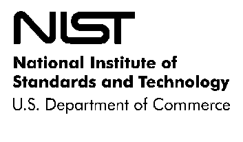
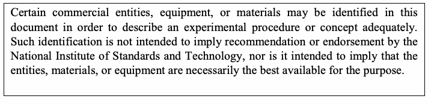

NIST Special Publication · PDF 原文抽出
The NIST Definition of Cloud Computing
NISTによるクラウドコンピューティングの定義
NIST SP 800-145（The NIST Definition of Cloud Computing）の英文と日本語訳を段落ごとに並べた閲覧用ページです。クラウドコンピューティングの定義と、5つの基本特性、3つのサービスモデル、4つの導入モデルを示します。 翻訳は非公式です。要件の確認にはNIST の正式版 PDFを参照してください。
PDF から抽出した原文は原本との照合待ちです。

Special Publication 800-145
特別刊行物 800-145
未レビュー訳The NIST Definition of Cloud Computing
NISTによるクラウドコンピューティングの定義
未レビュー訳Recommendations of the National Institute of Standards and Technology
米国国立標準技術研究所（NIST）の提言
未レビュー訳Peter Mell Timothy Grance
Peter Mell、Timothy Grance
未レビュー訳NIST Special Publication 800-145 The NIST Definition of Cloud Computing
NIST特別刊行物 800-145 NISTによるクラウドコンピューティングの定義
未レビュー訳Peter Mell Timothy Grance
Peter Mell、Timothy Grance
未レビュー訳C O M P U T E R S E C U R I T Y
コンピュータセキュリティ
未レビュー訳Computer Security Division Information Technology Laboratory National Institute of Standards and Technology Gaithersburg, MD 20899-8930
コンピュータセキュリティ部門 情報技術研究所 米国国立標準技術研究所 メリーランド州ゲイザースバーグ 20899-8930
未レビュー訳September 2011
2011年9月
未レビュー訳U.S. Department of Commerce
米国商務省
未レビュー訳Rebecca M. Blank, Acting Secretary
Rebecca M. Blank、商務長官代行
未レビュー訳National Institute of Standards and Technology
米国国立標準技術研究所
未レビュー訳Patrick D. Gallagher, Under Secretary for Standards and Technology and Director
Patrick D. Gallagher、標準技術担当商務次官兼所長
未レビュー訳Reports on Computer Systems Technology
コンピュータシステム技術報告
未レビュー訳The Information Technology Laboratory (ITL) at the National Institute of Standards and Technology (NIST) promotes the U.S. economy and public welfare by providing technical leadership for the nation’s measurement and standards infrastructure. ITL develops tests, test methods, reference data, proof of concept implementations, and technical analysis to advance the development and productive use of information technology. ITL’s responsibilities include the development of technical, physical, administrative, and management standards and guidelines for the cost-effective security and privacy of sensitive unclassified information in Federal computer systems. This Special Publication 800-series reports on ITL’s research, guidance, and outreach efforts in computer security and its collaborative activities with industry, government, and academic organizations.
米国国立標準技術研究所（NIST）の情報技術研究所（ITL）は、米国の計測・標準基盤に技術面で貢献し、米国経済と公共の福祉を促進している。ITLは、情報技術の開発と有効活用を進めるため、試験、試験方法、参照データ、概念実証実装、技術分析を行う。ITLの責務には、連邦政府のコンピュータシステムにおける機密扱いではない要配慮情報を費用対効果よく保護するための、技術面、物理面、管理面、運用管理面の標準およびガイドラインの策定が含まれる。本特別刊行物800シリーズは、ITLによるコンピュータセキュリティの研究、ガイダンス、普及活動、および産業界、政府、学術機関との協力活動を報告する。
未レビュー訳National Institute of Standards and Technology Special Publication 800-145
米国国立標準技術研究所 特別刊行物 800-145
未レビュー訳7 pages (September 2011)
全7ページ（2011年9月）
未レビュー訳原本の表画像

Acknowledgements
謝辞
未レビュー訳The authors Peter Mell and Timothy Grance of the National Institute of Standards and Technology (NIST) would like to thank the many experts in industry and government who contributed their thoughts to the creation and review of this definition. We especially acknowledge Murugiah Souppaya and Lee Badger, also of NIST, and Wayne Jansen of Booz Allen Hamilton, whose advice and technical insight assisted this effort.
米国国立標準技術研究所（NIST）の著者Peter MellおよびTimothy Granceは、この定義の作成とレビューに意見を寄せた産業界および政府の多くの専門家に謝意を表する。特に、同じくNISTのMurugiah Souppaya氏とLee Badger氏、および助言と技術的知見を提供したBooz Allen HamiltonのWayne Jansen氏に感謝する。
未レビュー訳Errata
正誤表
未レビュー訳The following changes have been incorporated into Special Publication 800-145, as of the date indicated in the table.
次の変更が、表に示す日付時点で特別刊行物800-145に反映されている。
未レビュー訳
| 日付 | 種類 | 変更内容 | ページ番号 |
| 2012年4月27日 | 編集上の修正 | ページ番号を「2」から「1」に訂正 | 1 |
1. Introduction
1. はじめに
未レビュー訳1.1 Authority
1.1 権限
未レビュー訳The National Institute of Standards and Technology (NIST) developed this document in furtherance of its statutory responsibilities under the Federal Information Security Management Act (FISMA) of 2002, Public Law 107-347.
米国国立標準技術研究所（NIST）は、2002年連邦情報セキュリティマネジメント法（FISMA）、公法107-347に基づく法定責務を遂行するため、本書を策定した。
未レビュー訳NIST is responsible for developing standards and guidelines, including minimum requirements, for providing adequate information security for all agency operations and assets; but such standards and guidelines shall not apply to national security systems. This guideline is consistent with the requirements of the Office of Management and Budget (OMB) Circular A-130, Section 8b(3), “Securing Agency Information Systems,” as analyzed in A-130, Appendix IV: Analysis of Key Sections. Supplemental information is provided in A-130, Appendix III.
NISTは、すべての政府機関の業務および資産に十分な情報セキュリティを提供するため、最低要件を含む標準およびガイドラインを策定する責任を負う。ただし、これらの標準およびガイドラインは国家安全保障システムには適用されない。本ガイドラインは、行政管理予算局（OMB）通達A-130第8b(3)節「政府機関の情報システムの保護」の要件に沿っており、A-130付録IV「主要な節の分析」で検討されている。補足情報はA-130付録IIIに記載されている。
未レビュー訳This guideline has been prepared for use by Federal agencies. It may be used by nongovernmental organizations on a voluntary basis and is not subject to copyright, though attribution is desired.
本ガイドラインは連邦政府機関向けに作成された。政府機関以外の組織も任意で利用でき、著作権の制限対象ではないが、出典を明記することが望ましい。
未レビュー訳Nothing in this document should be taken to contradict standards and guidelines made mandatory and binding on Federal agencies by the Secretary of Commerce under statutory authority, nor should these guidelines be interpreted as altering or superseding the existing authorities of the Secretary of Commerce, Director of the OMB, or any other Federal official.
本書のいかなる内容も、商務長官が法的権限に基づき連邦政府機関に義務付けた標準およびガイドラインに反するものと解釈してはならない。また、本ガイドラインを、商務長官、OMB長官、その他の連邦政府職員が有する既存の権限を変更または置き換えるものと解釈してはならない。
未レビュー訳1.2 Purpose and Scope
1.2 目的と適用範囲
未レビュー訳Cloud computing is an evolving paradigm. The NIST definition characterizes important aspects of cloud computing and is intended to serve as a means for broad comparisons of cloud services and deployment strategies, and to provide a baseline for discussion from what is cloud computing to how to best use cloud computing. The service and deployment models defined form a simple taxonomy that is not intended to prescribe or constrain any particular method of deployment, service delivery, or business operation.
クラウドコンピューティングは進化を続けるパラダイムである。NISTの定義は、クラウドコンピューティングの重要な側面を明確にし、クラウドサービスや導入方式を広く比較するための手段となる。また、クラウドコンピューティングとは何か、どのように活用するのが最善かを議論するための基準を提供する。ここで定義するサービスモデルと導入モデルは単純な分類体系であり、特定の導入方法、サービス提供方法、または事業運営を規定したり制約したりするものではない。
未レビュー訳1.3 Audience
1.3 対象読者
未レビュー訳The intended audience of this document is system planners, program managers, technologists, and others adopting cloud computing as consumers or providers of cloud services.
本書の対象読者は、クラウドサービスの利用者または提供者としてクラウドコンピューティングを導入するシステム計画担当者、プログラム管理者、技術者などである。
未レビュー訳2. The NIST Definition of Cloud Computing
2. NISTによるクラウドコンピューティングの定義
未レビュー訳Cloud computing is a model for enabling ubiquitous, convenient, on-demand network access to a shared pool of configurable computing resources (e.g., networks, servers, storage, applications, and services) that can be rapidly provisioned and released with minimal management effort or service provider interaction. This cloud model is composed of five essential characteristics, three service models, and four deployment models.
クラウドコンピューティングとは、ネットワーク、サーバー、ストレージ、アプリケーション、サービスなど、構成可能なコンピューティング資源を共有プールとして、ユビキタスかつ便利なオンデマンドのネットワークアクセスを可能にするモデルである。これらの資源は、最小限の管理作業またはサービス提供者とのやり取りで迅速に割り当て、解放できる。このクラウドモデルは、5つの基本特性、3つのサービスモデル、4つの導入モデルで構成される。
未レビュー訳Essential Characteristics:
基本特性：
未レビュー訳On-demand self-service. A consumer can unilaterally provision computing capabilities, such as server time and network storage, as needed automatically without requiring human
オンデマンドのセルフサービス。利用者は、必要に応じてサーバー時間やネットワークストレージなどのコンピューティング能力を自ら自動的に確保でき、サービス提供者側の人との
未レビュー訳interaction with each service provider.
やり取りを必要としない。
未レビュー訳Broad network access. Capabilities are available over the network and accessed through standard mechanisms that promote use by heterogeneous thin or thick client platforms (e.g.,
幅広いネットワークアクセス。機能はネットワーク経由で利用でき、さまざまなシンクライアントまたはファットクライアントでの利用を促す標準的な仕組みを通じてアクセスする（例えば、
未レビュー訳mobile phones, tablets, laptops, and workstations).
携帯電話、タブレット、ノートパソコン、ワークステーション）。
未レビュー訳Resource pooling. The provider’s computing resources are pooled to serve multiple consumers using a multi-tenant model, with different physical and virtual resources dynamically assigned and reassigned according to consumer demand. There is a sense of location independence in that the customer generally has no control or knowledge over the exact location of the provided resources but may be able to specify location at a higher level of abstraction (e.g., country, state, or datacenter). Examples of resources include storage,
リソースプーリング。提供者のコンピューティング資源はマルチテナントモデルで複数の利用者に提供され、物理資源および仮想資源は利用者の需要に応じて動的に割り当て直される。利用者は提供資源の正確な所在を通常、制御も把握もできない一方、より高い抽象度で（例えば国、州、データセンターを指定して）所在を指定できる場合があるため、資源の所在に依存しない性質がある。資源にはストレージ、
未レビュー訳processing, memory, and network bandwidth.
処理能力、メモリ、ネットワーク帯域幅などが含まれる。
未レビュー訳Rapid elasticity. Capabilities can be elastically provisioned and released, in some cases automatically, to scale rapidly outward and inward commensurate with demand. To the consumer, the capabilities available for provisioning often appear to be unlimited and can
迅速な弾力性。機能は弾力的に割り当て、解放でき、場合によっては需要に応じて外向きにも内向きにも急速に拡張・縮小できるよう自動化されている。利用者から見ると、確保できる機能の量には上限がないように見えることが多く、
未レビュー訳be appropriated in any quantity at any time.
必要な時点で任意の量を確保できる。
未レビュー訳Measured service. Cloud systems automatically control and optimize resource use by leveraging a metering capability1 at some level of abstraction appropriate to the type of service (e.g., storage, processing, bandwidth, and active user accounts). Resource usage can be monitored, controlled, and reported, providing transparency for both the provider and
測定可能なサービス。クラウドシステムは、サービスの種類（例えばストレージ、処理、帯域幅、アクティブな利用者アカウント）に適した抽象度で、計測機能1を用いて資源の使用量を自動的に制御し、最適化する。資源の使用状況を監視、制御、報告できるため、利用されたサービスについて提供者と
未レビュー訳consumer of the utilized service.
利用者の双方に透明性がもたらされる。
未レビュー訳Service Models:
サービスモデル：
未レビュー訳Software as a Service (SaaS). The capability provided to the consumer is to use the provider’s applications running on a cloud infrastructure2. The applications are accessible from various client devices through either a thin client interface, such as a web browser (e.g., web-based email), or a program interface. The consumer does not manage or control the underlying cloud infrastructure including network, servers, operating systems, storage, or even individual application capabilities, with the possible exception of limited user-
サービスとしてのソフトウェア（SaaS）。利用者に提供される機能は、クラウド基盤2上で稼働する提供者のアプリケーションを利用することである。アプリケーションには、ウェブブラウザーなどのシンクライアントインターフェース（例えばウェブメール）またはプログラムインターフェースを通じて、さまざまなクライアント端末からアクセスできる。利用者は、ネットワーク、サーバー、オペレーティングシステム、ストレージなどの基盤となるクラウドインフラストラクチャや、個々のアプリケーション機能を管理・制御しない。ただし、利用者固有の
未レビュー訳specific application configuration settings.
アプリケーション構成設定に限って例外となることがある。
未レビュー訳Platform as a Service (PaaS). The capability provided to the consumer is to deploy onto the cloud infrastructure consumer-created or acquired applications created using programming languages, libraries, services, and tools supported by the provider.3 The consumer does not manage or control the underlying cloud infrastructure including network, servers, operating systems, or storage, but has control over the deployed applications and possibly configuration settings for the application-hosting environment. Infrastructure as a Service (IaaS). The capability provided to the consumer is to provision processing, storage, networks, and other fundamental computing resources where the consumer is able to deploy and run arbitrary software, which can include operating systems and applications. The consumer does not manage or control the underlying cloud infrastructure but has control over operating systems, storage, and deployed applications; and possibly limited control of select networking components (e.g., host firewalls).
サービスとしてのプラットフォーム（PaaS）。利用者に提供される機能は、提供者がサポートするプログラミング言語、ライブラリ、サービス、ツールを使って利用者が作成または取得したアプリケーションを、クラウド基盤に展開することである。3 利用者は、ネットワーク、サーバー、オペレーティングシステム、ストレージなど、基盤となるクラウドインフラストラクチャを管理・制御しないが、展開したアプリケーションと、アプリケーションのホスティング環境に関する構成設定を制御できる場合がある。サービスとしてのインフラストラクチャ（IaaS）。利用者に提供される機能は、処理能力、ストレージ、ネットワークなどの基本的なコンピューティング資源を確保し、その上に任意のソフトウェア（オペレーティングシステムやアプリケーションを含む）を展開して実行することである。利用者は基盤となるクラウドインフラストラクチャを管理・制御しないが、オペレーティングシステム、ストレージ、展開したアプリケーションを制御する。また、選択されたネットワークコンポーネント（例えばホストファイアウォール）を限定的に制御できる場合がある。
未レビュー訳Deployment Models:
導入モデル：
未レビュー訳Private cloud. The cloud infrastructure is provisioned for exclusive use by a single organization comprising multiple consumers (e.g., business units). It may be owned, managed, and operated by the organization, a third party, or some combination of them, and it may exist
プライベートクラウド。複数の利用者（例えば事業部門）を抱える単一の組織が専用で使用するために、クラウドインフラストラクチャを提供する。組織、第三者、またはその組み合わせが所有、管理、運用し、
未レビュー訳on or off premises.
オンプレミスにもオフプレミスにも配置できる。
未レビュー訳Community cloud. The cloud infrastructure is provisioned for exclusive use by a specific community of consumers from organizations that have shared concerns (e.g., mission, security requirements, policy, and compliance considerations). It may be owned, managed, and operated by one or more of the organizations in the community, a third party, or some combination of them, and it may exist on or off premises. Public cloud. The cloud infrastructure is provisioned for open use by the general public. It may be owned, managed, and operated by a business, academic, or government organization, or some combination of them. It exists on the premises of the cloud provider. Hybrid cloud. The cloud infrastructure is a composition of two or more distinct cloud infrastructures (private, community, or public) that remain unique entities, but are bound together by standardized or proprietary technology that enables data and application
コミュニティクラウド。共通の関心事（例えば使命、セキュリティ要件、ポリシー、コンプライアンス上の考慮事項）を持つ組織の利用者コミュニティが専用で使用するために、クラウドインフラストラクチャを提供する。コミュニティに属する1つ以上の組織、第三者、またはその組み合わせが所有、管理、運用し、オンプレミスにもオフプレミスにも配置できる。パブリッククラウド。一般公衆が利用できるようにクラウドインフラストラクチャを提供する。企業、学術機関、政府機関、またはその組み合わせが所有、管理、運用する。クラウド提供者の施設内に配置される。ハイブリッドクラウド。プライベート、コミュニティ、パブリックのうち2つ以上の異なるクラウドインフラストラクチャを組み合わせたもので、各インフラストラクチャは独立した実体として保たれるが、標準技術または独自技術で結合され、データやアプリケーションの
未レビュー訳portability (e.g., cloud bursting for load balancing between clouds).
移植性を可能にする（例えば、クラウド間の負荷分散のためのクラウドバースティング）。
未レビュー訳